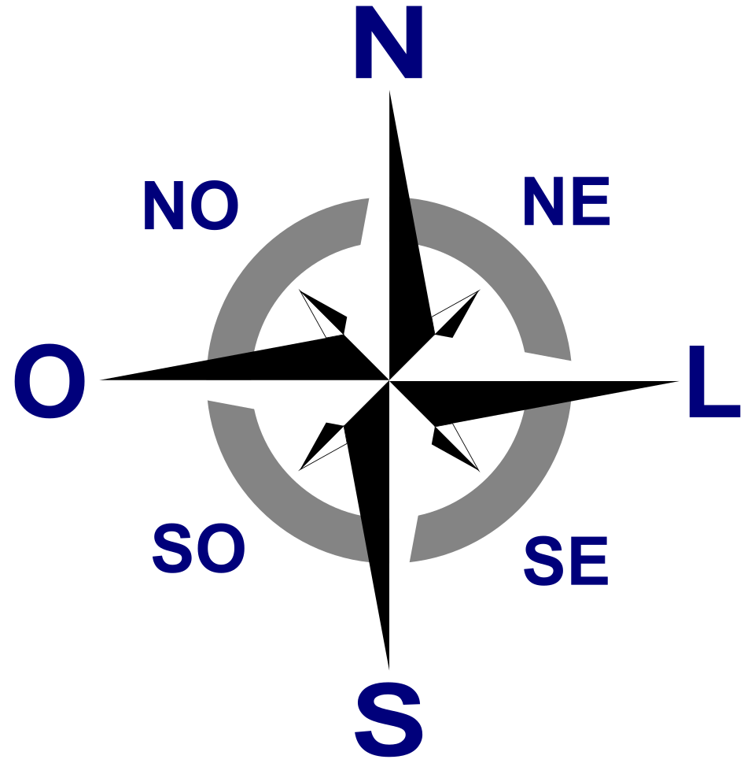
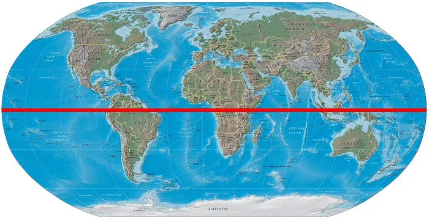
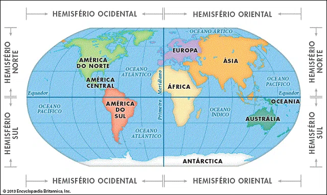
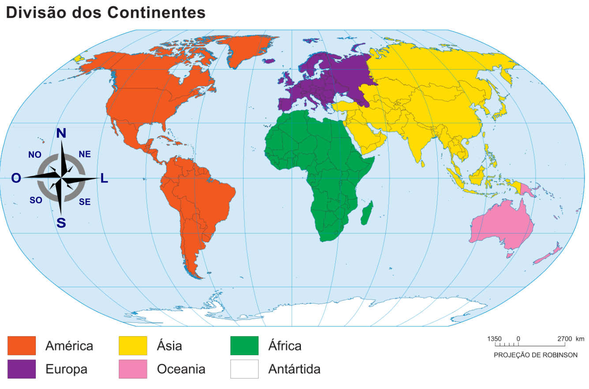
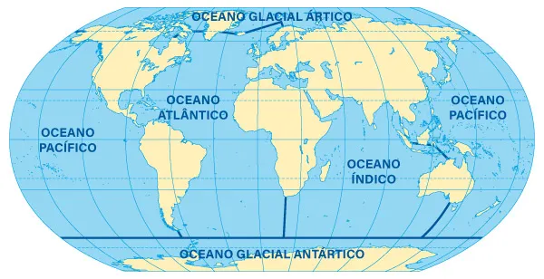
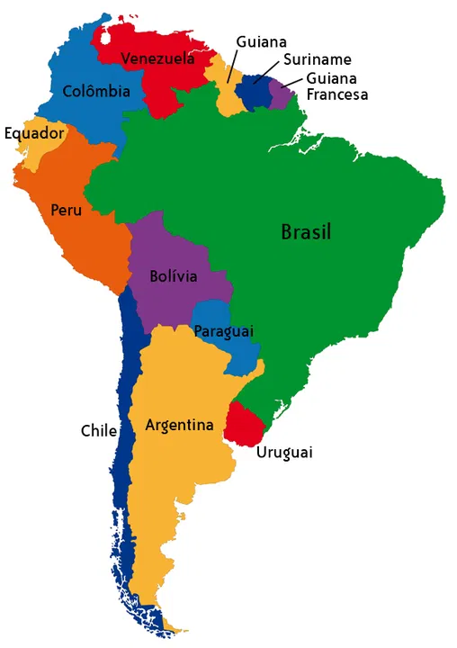
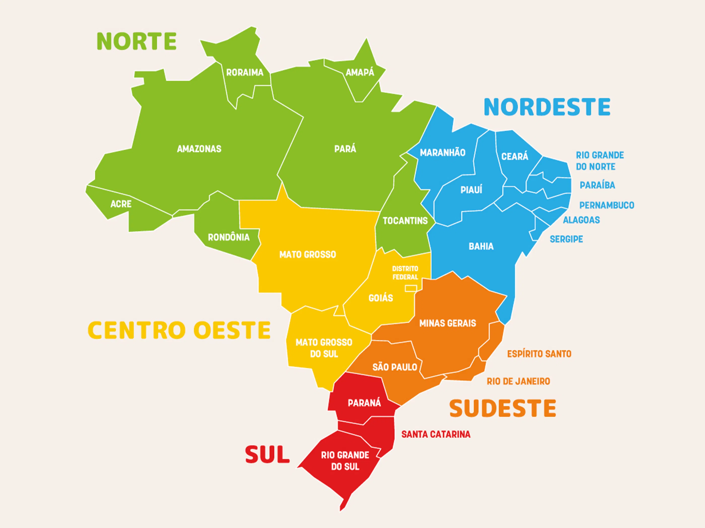
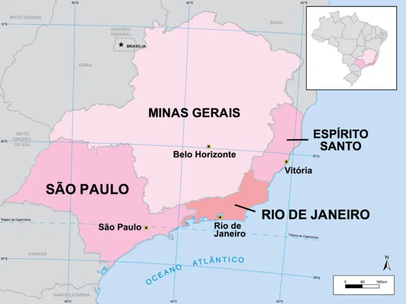

Orientação · Planeta Terra · América · Brasil · 4º Ano
A Rosa dos Ventos é um instrumento que indica as direções no espaço. Tem 4 pontos cardeais e 4 pontos colaterais.

A Linha do Equador é uma linha imaginária que divide a Terra em dois hemisférios: Norte e Sul. Ela fica bem no meio do planeta, a igual distância dos dois polos. É a linha de latitude 0°.

O Brasil é cruzado pela Linha do Equador no seu extremo norte, pela região do Amapá.
O Meridiano de Greenwich é uma linha imaginária vertical que divide a Terra em dois hemisférios: Leste e Oeste. Passa pela cidade de Greenwich, na Inglaterra. É a linha de longitude 0°.

O Brasil fica quase todo no Hemisfério Oeste (a oeste do Meridiano de Greenwich).
Parte de cima da Terra, acima da Linha do Equador.
Parte de baixo da Terra, abaixo da Linha do Equador.
À esquerda do Meridiano de Greenwich.
À direita do Meridiano de Greenwich.


| Oceano | Curiosidade |
|---|---|
| 🌊 Pacífico | O maior do mundo — cobre quase 1/3 da superfície da Terra |
| 🌊 Atlântico | Banha o Brasil a leste; separa América da Europa e África |
| 🌊 Índico | Entre África, Ásia e Oceania |
| 🌊 Ártico | Em torno do Polo Norte; coberto de gelo no inverno |
| 🌊 Antártico | Em torno da Antártida; o mais frio |
A América é dividida em 3 partes:

| País | Capital | Curiosidade |
|---|---|---|
| 🇧🇷 Brasil | Brasília | Maior país da América do Sul |
| 🇦🇷 Argentina | Buenos Aires | 2º maior; faz fronteira com o Brasil ao sul |
| 🇨🇱 Chile | Santiago | País mais longo e estreito do mundo |
| 🇨🇴 Colômbia | Bogotá | Único país com costa no Pacífico e no Atlântico |
| 🇵🇪 Peru | Lima | Lar de Machu Picchu e do rio Amazonas (nascente) |
| 🇻🇪 Venezuela | Caracas | Maior reserva de petróleo do mundo |
| 🇧🇴 Bolívia | Sucre / La Paz | País sem saída para o mar |
| 🇵🇾 Paraguai | Assunção | País sem saída para o mar; faz fronteira com o Brasil |
| 🇺🇾 Uruguai | Montevidéu | Menor país da América do Sul |
| 🇪🇨 Equador | Quito | Cruzado pela Linha do Equador (deu nome ao país!) |
| 🇬🇾 Guiana | Georgetown | Único país da América do Sul com inglês oficial |
| 🇸🇷 Suriname | Paramaribo | Menor país da América do Sul em área |
* Guiana Francesa (território francês) também fica na América do Sul.
O Brasil é dividido pelo IBGE em 5 grandes regiões, cada uma com características próprias de clima, vegetação, cultura e economia.

O Sudeste é a região mais desenvolvida e mais populosa do Brasil. Tem 4 estados:

| Estado | Capital | Destaque |
|---|---|---|
| 🟨 São Paulo (SP) | São Paulo | Maior cidade do Brasil e da América do Sul; maior PIB |
| 🟦 Rio de Janeiro (RJ) | Rio de Janeiro | Ex-capital do Brasil; Cristo Redentor; Carnaval famoso |
| 🟥 Minas Gerais (MG) | Belo Horizonte | Maior estado do Sudeste em área; minério de ferro |
| 🟩 Espírito Santo (ES) | Vitória | Menor estado do Sudeste; banhado pelo Atlântico |